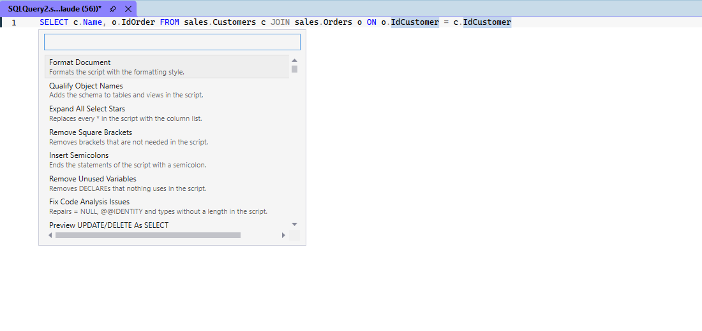
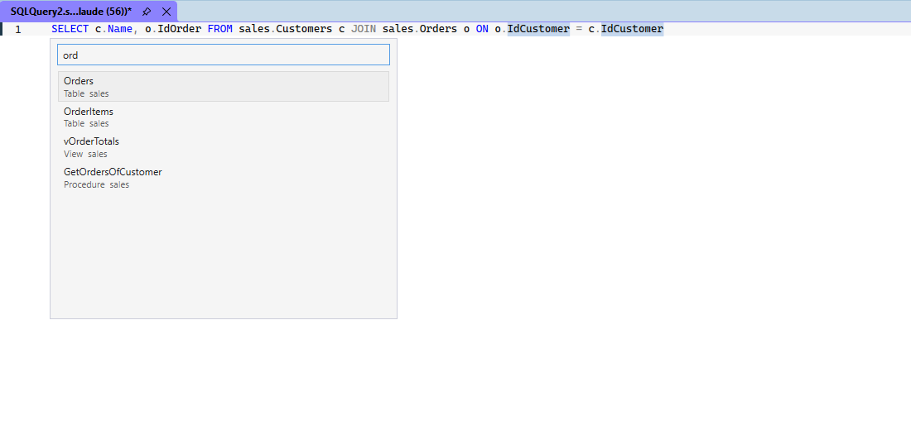
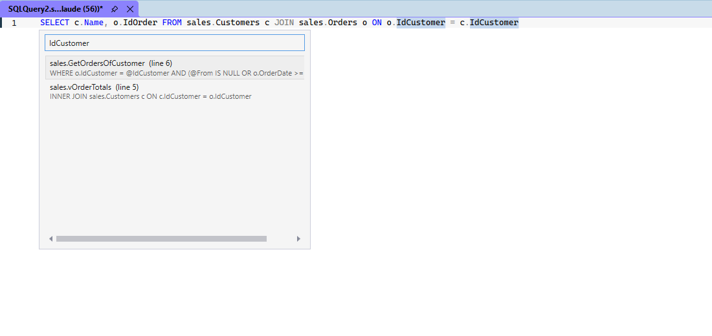
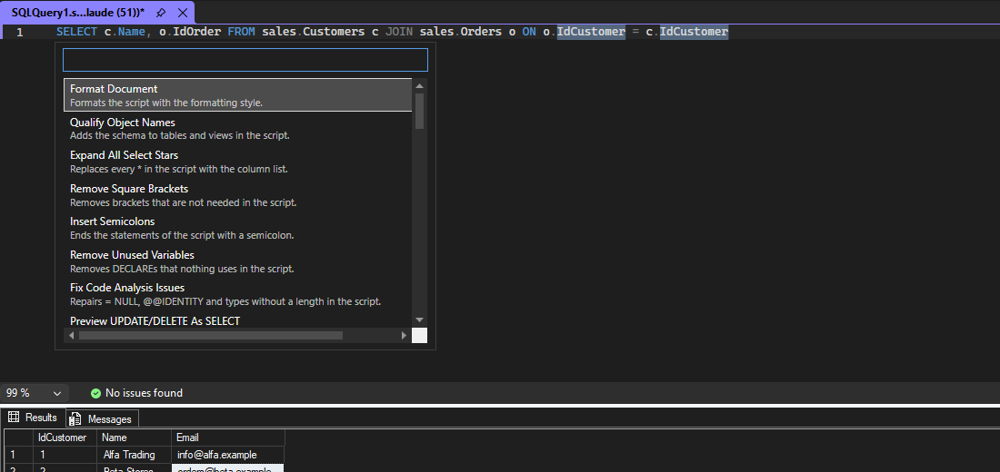

Quick actions and navigation
One popup for every command, and the commands that take you to an object, a line of database code or what depends on it.
Quick actions popup

- Open: tap Ctrl (press and release it without any other key or the mouse in between). Ctrl used together with another key or the mouse does not open it, so Ctrl+C, Ctrl+Space and the other shortcuts are not affected. The option Quick actions on a tap of Ctrl turns the tap off.
- Contents: the actions of the SQL Prompter menu that fit the situation (the ones for a selection when there is one, the ones for the whole script otherwise) and the snippets that fit, each with a one-line description. It also has Script Outline.
- Use: type to filter (every typed word must be in the name or the description), Up / Down to move, Enter runs the item, Esc, a second tap of Ctrl or a click outside closes it. It opens on the monitor of the caret.
Script Outline
Lists the structure of the script: batches (GO), statements (the first line), variables of DECLARE, temporary tables (created or dropped), CTE names and the header of a procedure, function, view or trigger. Typing filters, Enter moves the caret to that place and centers the line. Unfinished code gives a shorter outline and never fails.
Quick Open Object

ord finds the tables, the view and the procedure.Searches the tables, views, functions, synonyms, procedures and triggers of the loaded metadata (system objects are not listed). Matching is as loose as in completion: prefixes, initials, words, characters in order; a dot in the text matches the full schema.name. At most 200 results, ordered by the kind of match and the name. Enter opens the script of the object in a new window; Shift+Enter inserts schema.name at the caret. It uses only the cached metadata, so it opens at once and says in the status bar when the metadata is not loaded yet.
Find In Database Code

IdCustomer.Searches the text of the procedures, functions, views and triggers of the database (those not shipped by Microsoft) for the selection, or for the word at the caret as a whole word. It runs in the background (60 seconds at most) and reports the counts in the status bar, including modules whose text is encrypted. Each result is a line with its number in the script of the object; Enter opens the object in a new window and puts the caret on that line.
Show Dependencies
Takes the object at the caret and lists Uses (what the object references) and Used by (what references it), with the kind of each, from sys.sql_expression_dependencies. Enter opens the script of an object of the same database; for an object of another database the status bar says so.
Go To Definition and Object Explorer
- Go To Definition (F12) reads the dotted name around the caret (up to three parts), resolves an alias, or a table name used as a column qualifier, to its table and opens the script of the object in a new window: a table as
CREATE TABLE, a view, function, procedure or trigger asCREATE OR ALTER. Names on a linked server are not followed. The new tab is not marked as modified: closing it unchanged does not ask to save (the same for the tabs that hold a generated text: a statement preview, an insert script of grid rows, the summary of a script); as soon as you type, it is modified as usual. - The new window is on the same connection and its tab is named after the object, with a number when the name is already open.
- Show In Object Explorer (Ctrl+F12) selects the object at the caret in Object Explorer.
The keys are set once when the extension is first installed, and only when they are free; if a key does not work, bind the command in Tools > Options > Environment > Keyboard (the command names start with SQLPrompter.).
The same popup in the dark theme
